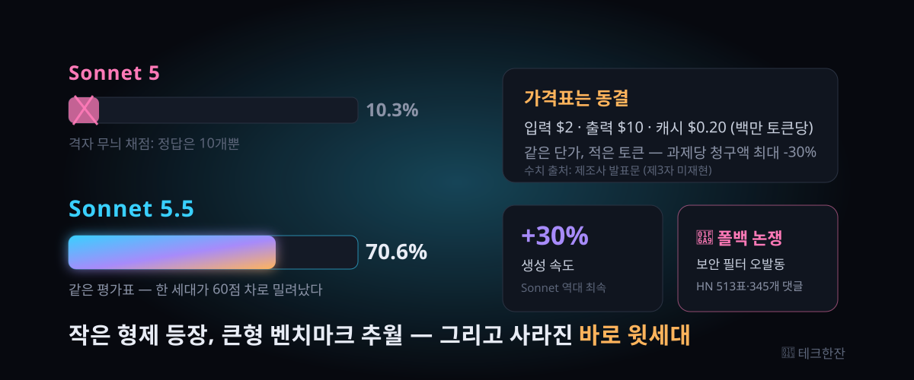

Claude Sonnet 5.5 — 전 세대를 60점 차로 추월한 '작은 형제'의 실체 (HackerNews 513표)

결론부터: 이번 세대의 진짜 뉴스는 신모델이 아니라 구모델의 무덤다. 에이전트 코딩 평가에서 10점에 머물렀던 전 세대를, 같은 가격표의 후속작이 70점대로 덮어썼다.
앤트로픽이 2026년 9월 28일 Claude Sonnet 5.5를 공개했다. Claude 5.5 패밀리에서 Opus 다음으로 나온 두 번째 모델로, 생성 속도는 30% 이상 빨라졌고 과제당 비용은 최대 30% 적게 든다고 발표돼 있다. 토큰 단가는 이전 세대와 똑같이 동결됐다.
HackerNews 등재 글이 받은 표는 이틀 만에 513개, 스레드 345개(2026-09-29 오전 조회 기준). 그런데 댓글창의 첫 번째 질문은 성능 감탄이 아니었다 — "나한테는 왜 필요하지도 않은 모델인가?"였다.
30초 요약
| 항목 | 내용 |
|---|---|
| 무슨 일 | 앤트로픽이 Claude Sonnet 5.5 공개 (2026-09-28). Claude 5.5 패밀리의 두 번째 구성원, Opus 5.5의 아래 칸 |
| 키워드 | 속도 30%+ 향상, 과제당 비용 최대 30% 절감, 토큰 단가는 전작과 동일 ($2 입력/$10 출력, 캐시 읽기 $0.20·백만 토큰당) |
| 화제의 수치 | 에이전트 코딩 평가 Terminal-Bench 4.0에서 70.6% — 전 세대 Sonnet 5는 10.3%, 상위 모델 Opus 5.5는 66.4% |
| 안전장치 | Sonnet 계열 최초로 사이버 안전장치와 폴백 적용. 생물학 계열 안전장치는 Sonnet 5와 동일 수준 |
| 줄어든 칸 | 직전 세대 Sonnet 5. 이 글의 제목처럼, 세대가 밀려나는 속도가 모델 성능보다 빨라졌다 |
| 대기열 | 같은 패밀리의 경량 멤버 Haiku 5.5는 수 주 내 합류 예정으로 언급됨 |
1. 무엇이 터졌나
발표문의 뼈대는 단순하다. 무거운 판단이 필요한 일은 Opus 5.5가 맡고, 범위가 또렷한 일상 작업 — 버그 수정, 문서·슬라이드·스프레드시트 제작 — 은 Sonnet 5.5가 담당한다는 역할 분담이다. 속도가 30% 이상 빨라진 덕에 짧게 여러 번 반복하는 작업과의 궁합이 특히 강조됐다.
숫자 중 압권은 Terminal-Bench 4.0이다. 터미널 안에서 끝까지 과제를 수행하는 능력을 재는 이 평가에서 Sonnet 5.5는 70.6%를 기록했다. 직전 세대 Sonnet 5는 10.3%였다. 같은 평가 항목에서 플래그십 Opus 5.5는 66.4% — 즉 신형 중간 모델이 윗선을 넘었다는 표가 공식 자료에 찍혔다. 이 역전에는 단서가 하나 붙는데, 뒤에서 다룬다.
직접적인 초월이 아닌 지표도 있다. 실제 직업군의 산출물을 다루는 GDPval-AA에서는 상위 모델에 2점 뒤졌다. 프롬프트 하나로 폴리곤 게임 화면만 보고 클리어까지 가는 계열의 장기 작업에서 Sonnet 계열 처음으로 완주에 성공했고, 이미지 이해와 협업 문장력도 세대 간 상승이 주장됐다. 가격표는 그대로다: 백만 토큰당 입력 2달러, 출력 10달러, 캐시 읽기 0.20달러. 그런데 같은 과제를 더 적은 토큰으로 끝내므로 청구액 기준으로는 최대 30% 인하라는 게 회사 측 계산이다.
2. 왜 심상치 않은가
① 세대 교체 주기가 '모델'에서 '가격표 줄'로 짧아졌다
과거에는 신형이 나와도 구형이 한동안 현역으로 공존했다. 이번 발표로 Sonnet 5는 커넥션 한 줄에서 사라지는 수순에 들어갔다. 성능 격차가 60점짜리 구덩이라면 하위 호환성은 유지 비용을 정당화하지 못한다. 모델을 고르는 문제가 아니라 "우리 스택의 가격표에서 어느 줄이 지워지는가"로 논의가 이동한 셈이다.
② '동일 단가·감소 토큰'이라는 새로운 경쟁 축
단가를 내리지 않고 청구액을 낮추는 방식은 전에도 있었다: 프롬프트 압축, 라우팅, 캐싱. 이번엔 제조 측이 모델 자체의 토큰 소비를 줄이는 노선을 공식 문구에 넣었다. 이틀 전 한국에 소개한 Ember-1이 "훈련으로 생각 토큰을 깎는" 실험이었다면(아래 관련 잔 참조), Sonnet 5.5는 그 방향을 프리미엄 제품군 전면에 세운 사례다. 비용 경쟁이 '가격 인하'에서 '과제당 토큰량'으로 이동 중이다.
③ 안전장치가 '옵션'에서 '출하 사양'으로
Sonnet 계열 최초로 사이버 계열 안전장치와 폴백이 기본 장착됐다. 회사 설명상 위험군 요청만 겨냥한 좁은 필터이고 일상 개발 작업은 무관하다는 것인데, 정작 폭발한 지점이 바로 여기였다. 다음 4번에서 자세히 다룬다.
④ 벤치마크 역전의 단서 — 폴백 보정 문제
상위 댓글 중 가장 검증력 높은 지적이 이거다. Opus 5.5의 시스템 카드에 따르면, 안전장치에 깃발이 꽂힌 요청은 폴백 모델이 대신 답했고 그 비율이 시련(trial)의 10%에 달했다. Sonnet 5.5는 폴백이 1.5% 수준. 즉 70.6% 대 66.4%의 역전폭은 양 모델의 안전장치 통과율 차이로 상당 부분 설명될 수 있다. 벤치마크 점수를 비교할 때 '거름망을 통과한 문제만 푼 결과'라는 조건을 함께 읽어야 하는 이유다.
3. 바로 써먹기 — 전환 판단표
"오늘부터 갈아탈까"에 대한 답은 벤치마크가 아니라 내 트래픽의 작업 분포다. 아래 표는 전환 판단을 분해한 것이고, 아래 체크리스트는 오늘 적용 가능한 절차다. (단가·성능 수치는 전부 제조측 발표 기준이며, 실제 비용은 프롬프트 설계에 따라 달라진다.)
| 작업 유형 | 권장 판단 | 근거 |
|---|---|---|
| 범위 확정형 코딩 (버그 수정, 리팩터링, 스크립트) | 전환 1순위 | 발표문이 지목한 주력 영역. 속도 30%↑가 반복 호출에서 그대로 이득으로 쌓인다 |
| 문서·슬라이드·표 제작 | 전환 후보 | 제조사 성능 서술에 명시. 디자인 감각 개선도 주장됨 |
| 복잡·개방형 설계, 긴 판단 유지 작업 | Opus 유지를 전제로 A/B | 발표문 자체가 "복잡 작업은 Opus가 확실히 강하다"고 선을 긋는다 |
| 대량·저단가 자동화 (분류, 요약, 파이프라인) | 대기 — Haiku 5.5 | 경량 멤버가 수 주 내 합류 예정. 지금 중간급으로 묶으면 곧 다시 이사 |
| 보안·침투 테스트류 개발 작업 | 필터 오발동 리스크 점검 후 전환 | 평판 검증 프로그램 가입자도 평상 작업에서 깃발 사례 보고 (4번 ③) |
전환 절차 다섯 단계: ① 기존 프롬프트를 그대로 물려받지 말 것 — 상위 호환을 기대하고 구세대용 지시문을 물리면 "생각 과소비"가 되살아난다. ② thinking·effort 강도를 기본값에서 재조정. ③ 3~5개 대표 과제로 통과율과 과제당 총비용을 나란히 재고, 벤치마크 표가 아니라 그 실측표를 의사결정 근거로 쓴다. ④ 안전장치 깃발이 잦은 작업 유형(보안·파싱·레거시 C 코드)은 폴백 발생 여부를 로그에서 분리 계측. ⑤ Haiku 5.5 출격 시점을 재방문 일정으로 잡아둔다.
참고로, "속도가 30% 빨라진다"의 실전 의미는 체감 지연만이 아니다. 에이전트 루프에서 대기 시간이 줄면 같은 시간 안에 재시도·검증 회차를 더 넣을 수 있고, 이는 사실상 지능 예산의 증가로 환산된다.
4. 해외 반응 쟁점 (스레드 345개)
① "나한테 필요 없는 모델" 논쟁. 첫 번째 댓글은 윗선 모델의 효율이 좋아져 일상 작업분이 이미 한도로 충분하다며, Sonnet 칸의 존재 이유를 물었다. 답글 측은 배포 모니터링·CI 자동 수리·적대적 리뷰 같은 상시 작업으로 쓸모를 확장했지만, 원 댓글의 "동시에 여러 개 돌리면 내 이해가 따라가지 못한다"는 고백이 더 크게 공감받았다. 한 답글의 요약이 매서웠다: 수요를 제한하는 건 모델이 아니라 '이해하고 있다는 감각'을 놓지 않으려는 인간의 쪽수다.
② 페리컨 논쟁의 재림. 매 배포마다 상위를 차지하는 '펠리컨 SVG 그리기' 시험대가 이번에도 등장했다. 최상위 사유는 또 thinking 폭주: 최고 강도에서 128,000 토큰을 15분간 태우고도 최종 그림을 못 냈다는 보고. 반론은 "이걸 아직도 왜들 검사하느냐"였다. 새 모델의 약점을 구세대 약점 검사로 재확인하는 관행 자체에 대한 피로가 댓글창의 새로운 쟁점으로 굳어지는 중이다.
③ 안전장치 오발동 폭로전. 유료 최고 요금제에 사이버 평판 검증 프로그램까지 가입한 사용자가 정식 승인 작업에서 'Cyber' 깃발을 즉시 맞았다는 증언에 14개 답글이 달렸다. 파서 개발 중 'fuzz' 단어 하나로, 30년 전 대학 실습 C 코드를 보여줬을만으로 걸였다는 소동들이 이어졌다. "문서에는 검증 가입자 예외라고 적혀 있다"는 반박도 달렸지만, 정작 실사용 재현 사례들이 더 길게 쌓였다. 안전장치가 좁은 위험군만 건드린다는 발표문 문구와 실제 체감 사이의 간격이 이번 주 최대 쟁점이다.
④ 저강도 구간에서만 산다는 비용론. 표를 분석한 댓글들은Sonnet 5.5가 저·중 강도에서 저렴해지지만, 고강도 구간은 같은 돈으로 윗선을 쓰는 게 낫다는 계산을 제시했다. 제조측 성능표에서도 저·중 강도의 가성비 위치가 핵심 판매 포인트로 읽힌다. "강도를 올린 Sonnet은 사실 Sonnet이 아니다"라는 정리까지 나왔다.
⑤ 토큰 연료탱크 논쟁. 최고 강도 기준 과제당 토큰 소모가 구세대 대비 급증했다는 지적(발표문 자체의 표가 근거)과, 절감 특화 모델은 정반대로 생각 토큰을 줄이는 중이라는 대조가 함께 돌았다. "한쪽은 생각 토큰을 늘리는 방향이고 한쪽은 줄인다"는 논평이 이번 세대의 노선 차이를 한 문장으로 요약했다.
5. 마시기 전 주의
- 성능·비용·속도 수치는 전부 제조측 발표다. 특히 '과제당 비용 30% 절감'은 자사 시험 조건 기준이며, 제3자 재현은 이 글 작성 시점에 확인되지 않았다.
- Terminal-Bench 역전 수치는 폴백 비율 차이로 일부 설명된다. 벤치마크 비교표 읽을 때 거름망 조건을 항상 확인하라.
- 경쟁사 모델과의 비교 표는 제조측이 고른 상대·고른 항목만 담는다. 전체 지형도로 착각하지 말 것.
- 안전장치 폴백은 결과 품질에 조용히 개입한다. 깃발·폴백 발생률을 로그에서 분리 계측하기 전까지는 품질 비교가 성립하지 않는다.
- 가격표 동결 ≠ 청구액 동결. 강도·에이전트 회차 설계에 따라 체감 비용은 발표문과 다른 방향으로 움직인다.
바로 가기
- Sonnet 5.5 발표문 — 성능표·가격·안전장치 설명 원문
- HackerNews 스레드 — 513표·345개 댓글 전문
- 앤트로픽 문서 CDN — 모델 시스템 카드 보관함 (폴백 정책 확인용)
Ember-1 — 생각을 40% 줄였더니 답은 그대로 — 생각 토큰을 '줄이는' 정반대 노선의 실험. 두 잔을 나란히 놓으면 이번 주 모델 진영의 노선 갈림이 보인다.
OpenAI의 프롬프트 노이즈 실험 — 컨텍스트를 덜 태우는 법 — 모델 훈련 없이 토큰 낭비를 줄이는 처방. 전환 전에 프롬프트부터 손볼 이유.
AI 모델 시리즈 — 해외에서 먼저 검증된 모델 발표만 골라 한계까지.
도구 코너 — 로컬 개발 워크플로 체크리스트 (준비 중).